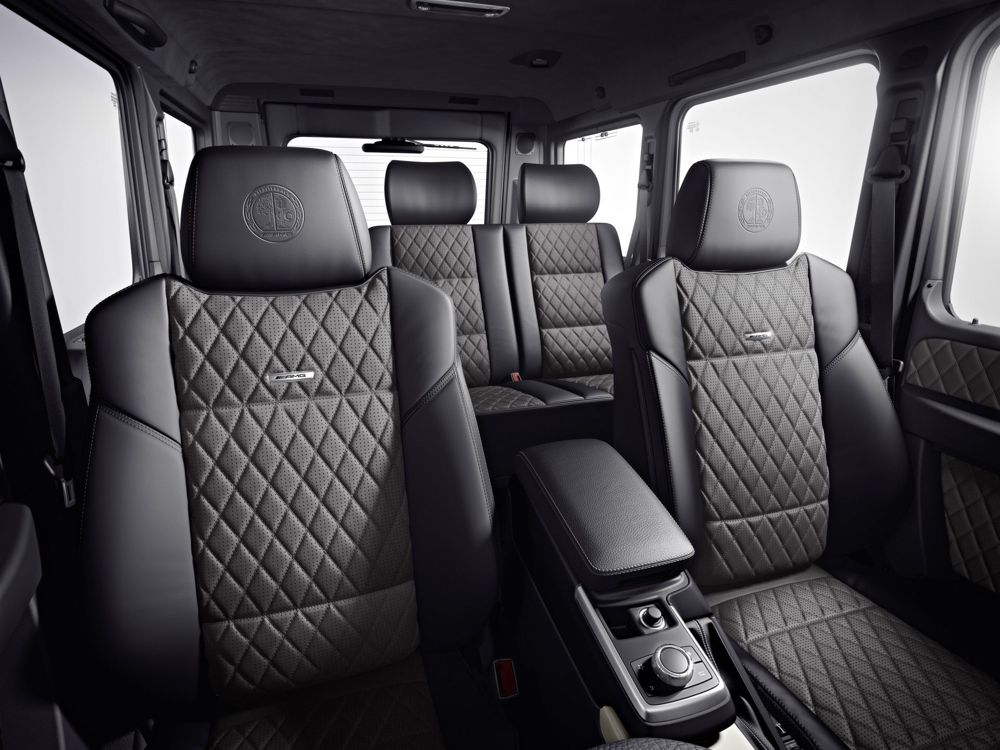
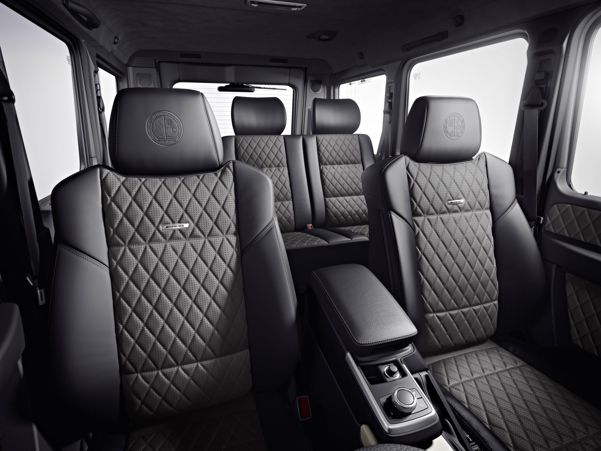
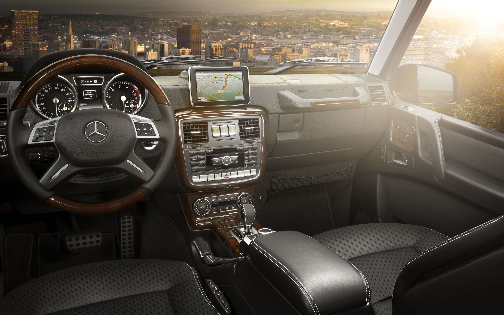

2021 MERCEDEZ-AMG G63
Overview
The 2021 Mercedes-AMG G63 is all about making things seem effortless, whether that's blasting down the autobahn with the speedometer in the triple digits or crawling rocks in Moab at single-digit speeds. It also will undoubtedly make your valet experience effortless as those guys are sure to leave your truck up front. This modernized version of the iconic original G-class has all of AMG's go-fast bits and baubles, including a 577-hp twin-turbo V-8 engine under its squared-off hood. Inside, a host of contemporary infotainment and tech features is at your fingertips and your behind is perched on a leather-wrapped throne with just the right amount of bolstering to keep you upright during any of the G63's off-road antics. Living so effortlessly comes at a price, but if you're rich enough to afford one, the G63 is worth the investment.
Price R2 226 152,25
 

What's new for 2021?
Mercedes's souped-up G-class model receives a wireless smartphone charging pad as standard equipment for 2021 and sees an expansion to the G manufaktur customization service that can provide an even deeper level of personalization. Elsewhere, a new AMG Night package adds black exterior trim pieces, and a new spare tire cover in Night Black Magno is now available.
Pricing and Which One to Buy
Although the 2021 G63 starts around R2 266 736, most vehicles go for considerably higher than that due to its myriad customization options. The standard equipment list is quite livable, however, since every Mercedes-AMG G63 comes with 20-inch wheels, adaptive suspension damping, a front brush guard, leather upholstery, heated front and rear seats, and three-zone climate control. We would option our G63 with the Seat Comfort package (to get the multicontour seats with ventilation and massage) and the AMG Trail package so we'd have the proper tires for off-roading.
Engine, Transmision and Performance
The 2021 Mercedes-AMG G63 comes with a twin-turbocharged 4.0-liter V-8 engine that makes 577 horsepower and 627 lb-ft of torque. A nine-speed automatic gearbox with steering-wheel-mounted paddle shifters sends all that power to the all-wheel-drive system (4Matic, in Mercedes marketing lingo). Low-range gearing (2.93:1 reduction) is standard as are three locking differentials, allowing the G63 to scale steep dirt grades with ridiculous ease. At our test track, the nearly 5800-pound G63 rocketed from zero to 60 mph in just 3.9 seconds. Along with its extra power, the G63 has AMG-specific suspension tuning. Ride comfort is vastly improved versus older G-wagens, but given this SUV's towering height and off-road mission, you shouldn't expect much in the way of handling ability. And there's still quite a bit of wind noise at highway speeds. Properly equipped, the G63 can tow up to 6500 pounds.
Fuel Economy and Real-World MPG
Frugality is not within the grasp of a fast, box-shaped SUV. The EPA rates the 2021 G63 at 13/15 mpg city/highway. In our 75-mpg highway fuel economy test, the G63 beat its EPA rating by delivering a 16-mpg result.
Interior, Comfort, and Cargo
Although the excessively rectilinear cabin will feel familiar if you've ever set foot in an older G-class, this is now a thoroughly modern place, with a 12.0-inch digital instrument panel, high-quality materials, and conveniences such as cupholders and a surround-view camera system. Taller drivers and passengers will find plenty of head- and legroom in both the front and rear. Around the back of the G-class, there's still no power liftgate, and you'll need to be in good shape to open the side-hinged gate, which has a full-size spare tire mounted on it. With the rear seats up, you'll have 38 cubic feet of cargo space. Folding them down (60/40 split) provides nearly 69 cubic feet.
Infotainment and Connectivity
The 2021 G63 has a standard 12.0-inch infotainment interface with Android Auto and Apple CarPlay integration as well as navigation. There are two USB ports up front, along with an SD card reader. Also included is a three-year subscription to Mercedes-Benz's connected car services, which provides basic features such as remote engine starting and stolen vehicle tracking. Options include Wi-Fi and a rear entertainment system, which features dual 10.0-inch touchscreens, each of which has its own USB, auxiliary, and HDMI ports.
Safety and Driver-Assitance Features
Neither the National Highway Traffic Safety Administration (NHTSA) nor the Insurance Institute for Highway Safety (IIHS) has tested the Mercedes G-class. The Mercedes-AMG G63 is not available with as many driver-assistance aids as the automaker's cars and crossover SUVs. The G63 comes with adaptive cruise control, for example, but the system does not offer extended restart capability in stop-and-go traffic. Key safety features include:
- Standard automated emergency braking
- Standard lane-keeping assist
- Standard adaptive cruise control
Warranty and Maintanance Coverage
Mercedes-AMG's limited and powertrain warranties are on par with other high-end SUVs. Instead of complimentary scheduled maintenance, however, there are prepaid maintenance plans available at extra cost when you purchase your 2021 G63.
- Limited warranty covers 4 years or 50,000 miles
- Powertrain warranty covers 4 years or 50,000 miles
- No complimentary scheduled maintenance